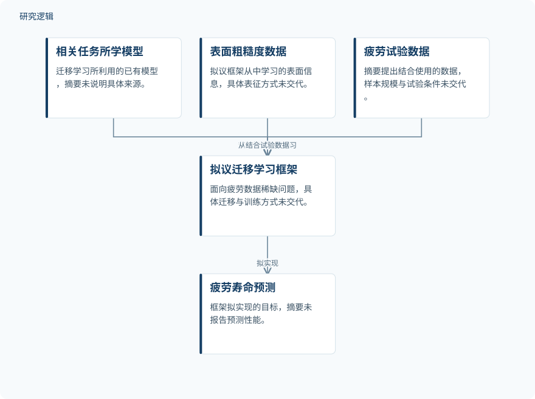

摘要解读
面向增材制造零件疲劳寿命预测的迁移学习框架
Transfer learning framework for fatigue life prediction of additively manufactured parts
解读更新 2026-10-22 12:13 · 依据公开摘要整理，未核验全文细节
增材制造零件的表面粗糙度如何关联疲劳寿命，疲劳试验数据不足时又如何建立预测模型？这篇摘要提出迁移学习框架的研究目标，阅读价值在于理解其问题设定，而非获取已经验证的预测性能。
文章目录
表面深谷与昂贵试验构成双重难题
增材制造能够快速生产定制化产品，并具有减少资源需求的潜力。但摘要指出，相比传统制造零件，其长期服役表现仍限制着关键任务应用。作者将原始制造状态零件的性能问题主要归因于表面粗糙度：表面深谷形成应力集中区域，可能成为裂纹萌生位置，进而导致零件失效。
理解这种疲劳行为需要试验数据，但疲劳试验的时间与经济成本较高，数据稀缺因此成为另一重障碍。本文关注的是如何在这一约束下，利用表面粗糙度信息开展疲劳寿命预测。
借助相关任务模型学习粗糙度与寿命的关系
摘要介绍的核心方法是迁移学习：将相关任务中已经学到的模型用于目标任务，以应对训练数据较少的问题。作者拟结合迁移学习与疲劳试验数据，构建能够从表面粗糙度数据中学习、进而预测疲劳寿命的框架。
这段方法描述明确了信息来源与预测目标，但没有说明相关任务是什么、哪些模型知识被迁移，以及粗糙度如何表征。因此，目前只能概括其方法关系，不能补写具体网络结构或训练流程。
依据摘要整理的拟议预测框架


仅展示摘要明确提出的方法关系，不表示框架已完成验证，也不是论文原图。
下载 SVG图示关系说明
实线表示相邻阶段的信息流，虚线表示跨阶段联系或反馈。
相关任务中学到的模型 → 拟构建的迁移学习框架：迁移已学模型；表面粗糙度数据 → 拟构建的迁移学习框架：提供学习信息；疲劳试验数据 → 拟构建的迁移学习框架：用于构建框架；拟构建的迁移学习框架 → 疲劳寿命预测：目标为预测寿命
摘要提出潜在用途，未报告预测结果
摘要将缓解增材制造疲劳研究中的数据稀缺问题列为框架的潜在用途，并期待由此支持更广泛的应用。不过，所给内容采用研究目标和潜力表述，没有报告预测误差、对照结果或性能提升，不能据此认定框架已经得到有效性验证。
样本、比较与验证范围仍待正文确认
仅凭摘要，无法判断材料与制造工艺、样本数量、疲劳加载条件、数据划分和验证范围，也无法确认是否与不采用迁移学习的方法进行了比较。这些属于当前资料未报告的信息，并不意味着论文没有开展相应工作。
阅读启发：关注迁移依据，而非预设效果
阅读启发：进一步阅读时，可重点追问相关任务与目标任务为何具有可迁移性，以及表面粗糙度信息怎样进入寿命预测。对于结构疲劳与可靠性研究，值得关注的是缓解数据稀缺的证据是否充分，而不是把迁移学习本身视为预测可靠性的保证。
以上为本站阅读启发与建议，不是论文已验证的结论。